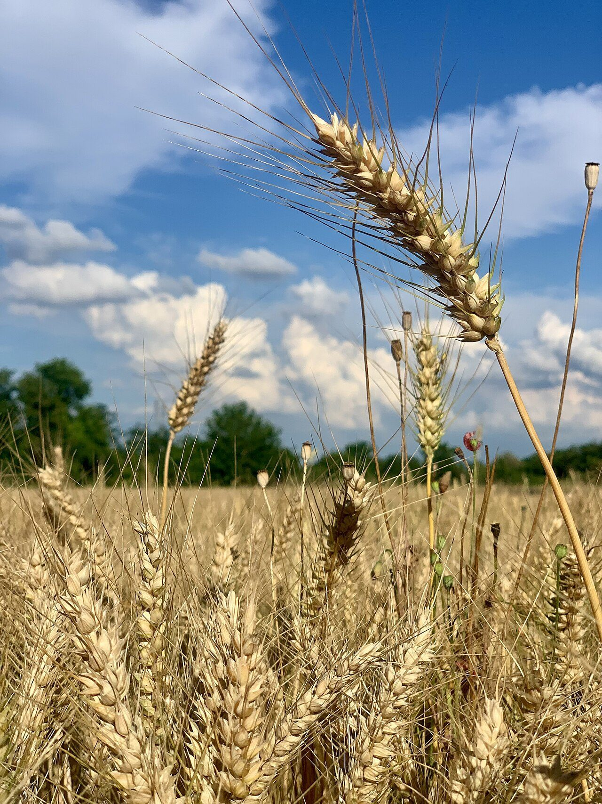

ときのぱん
時と、季と、刻をめぐる、
塩尻のベーカリー。
国内他地域のイメージ
長野県塩尻市広丘高出にあるベーカリー「ときのぱん」のご案内ページです。営業時間やメニューなど、詳しいことは準備中。いまのところの手がかりは、Instagramです。
Association / 制作側の連想
「とき」を三つに、ほどいてみる。
店名の由来は分かりません。このページを作った側は、「とき」という音から三つの漢字を思い浮かべました。お店の考えとは関係のない、制作側の連想です。
時
時間をかける
パンづくりには、待つ時間があるように思います。粉と水がなじむ時間、ふくらむ時間。想像にすぎませんが、「時」はそんな待ち時間のイメージです。
季
季節がめぐる
信州は、季節の表情がはっきりしている土地。秋の色づきや、実りの季節。「季」は、そんな移ろいを感じる字として並べました。
刻
刻(とき)を刻む
朝の光、昼の空、夕方の色。一日の「刻」を、時計の文字盤に見立てて、最初の写真を丸く切り抜いています。
Shiojiri / 制作側の連想
「塩尻」という地名から。
塩尻という地名は、「塩の道」の終わりに由来する、という話を聞いたことがあります(制作側の理解で、ここでは断定しません)。塩とパン。そんな連想で、このページは塩のような白と、朝焼けのような淡い桃色を選びました。
写真は店の近くではありません。右は国外・撮影地不明の、麦のイメージです。

Information
ご案内
| 所在地 | 〒399-0703 長野県塩尻市広丘高出1935-6 |
|---|---|
| 電話 | なし |
| 営業時間 | 準備中 |
| 定休日 | 準備中 |
| ご予約 | 準備中 |
| 駐車場 | 準備中 |
| SNS | Instagram @tokino.pan |